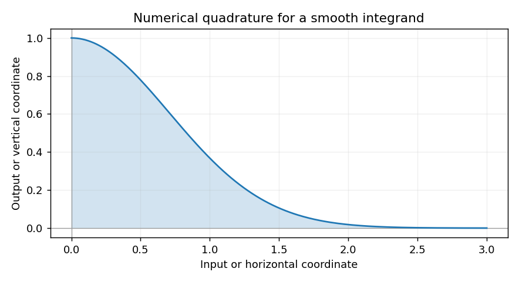
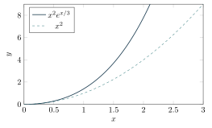
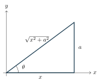
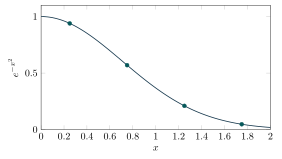

Techniques of Integration
Central question. How do we select a reliable strategy when an integrand does not match a basic antiderivative formula? Integration is a problem of mathematical structure: different-looking expressions can often be reorganized into recognizable forms. This chapter develops analytical methods, tests their limitations, and explains when numerical methods are preferable.
Learning outcomes. Students will derive and apply integration by parts; classify and evaluate trigonometric integrals; use trigonometric substitutions and partial fractions; compare numerical quadrature rules; determine convergence of improper integrals; and defend a method choice using mathematical reasoning and computational evidence.
Prerequisites. The chain rule, substitution, the Fundamental Theorem of Calculus, trigonometric identities, polynomial division, and limits.
Visual concept investigation
Analytical and numerical integration serve different purposes
An antiderivative can give an exact symbolic answer, while quadrature approximates a definite integral numerically. Numerical agreement is valuable for detecting algebraic errors, but it is not a substitute for the hypotheses of an integration theorem or a justified error bound.

Guided investigation. Explain why the trapezoidal rule becomes more accurate on many smooth functions as the step size decreases. Can a plot alone guarantee an error tolerance?
Interactive investigation: Numerical integration
Integration by parts
The product rule, read backward
Substitution reverses the chain rule. A different technique is needed when an integrand resembles a product of functions whose derivatives and antiderivatives are individually manageable. Start with the product rule, \((uv)'=u'v+uv'\). Integrating both sides and rearranging yields the following theorem.
Theorem — Integration by parts. If \(u\) and \(v\) are continuously differentiable, then \[\boxed{\int u\,dv=uv-\int v\,du.}\] For a definite integral, \(\displaystyle\int_a^b u\,dv=[uv]_a^b-\int_a^b v\,du\).
Proof. Integrate \(d(uv)=u\,dv+v\,du\) and rearrange. For the definite form, apply the Fundamental Theorem of Calculus to the boundary term.
Remark — Selecting \(u\) and \(dv\). A useful heuristic is to differentiate logarithmic or inverse-trigonometric factors and integrate exponential or trigonometric factors. This is not a theorem: always verify that the new integral is simpler. Record all four entries \(u\), \(du\), \(dv\), and \(v\) before substituting.
Example — Polynomial times exponential. Evaluate \(\int x^2e^{2x}\,dx\).
Solution. Take \(u=x^2\), \(dv=e^{2x}\,dx\), giving \(du=2x\,dx\) and \(v=e^{2x}/2\). Thus \[\int x^2e^{2x}\,dx=\frac{x^2e^{2x}}2-\int xe^{2x}\,dx.\] For the remaining integral use \(u=x\), \(dv=e^{2x}\,dx\): \[\int xe^{2x}\,dx=\frac{xe^{2x}}2-\frac{e^{2x}}4+C.\] Therefore \(\displaystyle\int x^2e^{2x}\,dx=e^{2x}\left(\frac{x^2}{2}-\frac{x}{2}+\frac14\right)+C\). Differentiating the result reproduces \(x^2e^{2x}\).
Example — A logarithm as a hidden product. Evaluate \(\int\ln x\,dx\) for \(x>0\).
Solution. Write \(\ln x=(\ln x)\cdot1\). Choose \(u=\ln x\), \(dv=dx\). Then \(du=dx/x\), \(v=x\), and \[\int\ln x\,dx=x\ln x-\int 1\,dx=x\ln x-x+C.\] This example illustrates why \(dv=dx\) is sometimes a useful choice.
Example — A definite integral and a boundary term. Evaluate \(\int_0^1 xe^{-x}\,dx\).
Solution. With \(u=x\), \(dv=e^{-x}dx\), we obtain \(du=dx\), \(v=-e^{-x}\). Hence \[\int_0^1 xe^{-x}dx=[-xe^{-x}]_0^1+\int_0^1e^{-x}dx=-e^{-1}+(1-e^{-1})=1-2e^{-1}.\] The result is positive, as the integrand is positive on \((0,1)\).
Cyclic integrals and reduction formulas
Some products return to the original integral after two integrations by parts. This is an algebraic opportunity, not a failure.
Example — A cyclic integral. Find \(I=\int e^x\cos x\,dx\).
Solution. First choose \(u=e^x\), \(dv=\cos x\,dx\) to get \(I=e^x\sin x-\int e^x\sin x\,dx\). Apply parts again to \(J=\int e^x\sin x\,dx\): \(J=-e^x\cos x+I\). Thus \(I=e^x\sin x+e^x\cos x-I\), so \[\boxed{I=\frac{e^x}{2}(\sin x+\cos x)+C.}\] Differentiation checks both the sign and the factor \(1/2\).
Theorem — Exponential-polynomial reduction. For \(a\ne0\) and integer \(n\ge1\), if \(I_n=\int x^ne^{ax}\,dx\), then \[I_n=\frac{x^ne^{ax}}a-\frac na I_{n-1}.\]
Proof. Use \(u=x^n\) and \(dv=e^{ax}\,dx\) in Theorem [thm:parts]. Repeating reduces the polynomial degree until \(I_0=e^{ax}/a\).

Trigonometric integrals
Odd powers and even powers of sine and cosine
Consider \(\int\sin^m x\cos^n x\,dx\) for nonnegative integers \(m,n\). If one exponent is odd, reserve one factor of that trigonometric function for a substitution. If both are even, power-reduction identities are usually more efficient.
Theorem — Power-reduction identities. \[\sin^2x=\frac{1-\cos2x}{2},\qquad\cos^2x=\frac{1+\cos2x}{2},\qquad\sin x\cos x=\frac{\sin2x}{2}.\]
Proof. The first two identities follow from \(\cos2x=1-2\sin^2x=2\cos^2x-1\); the third is the double-angle identity.
Example — Odd sine power. Evaluate \(\int\sin^3x\cos^2x\,dx\).
Solution. Write \(\sin^3x=(1-\cos^2x)\sin x\). Set \(u=\cos x\) and \(du=-\sin x\,dx\). Then \[\int\sin^3x\cos^2x\,dx=-\int(1-u^2)u^2\,du=-\frac{u^3}{3}+\frac{u^5}{5}+C.\] Substitute back: \(-\cos^3x/3+\cos^5x/5+C\).
Example — Both powers even. Evaluate \(\int\sin^2x\,dx\).
Solution. Use \(\sin^2x=(1-\cos2x)/2\). Therefore \(\int\sin^2x\,dx=x/2-\sin2x/4+C\).
Powers of tangent and secant
For \(\int\tan^m x\sec^n x\,dx\), reserve \(\sec^2x\,dx\) when a positive even secant power is available, then use \(1+\tan^2x=\sec^2x\). Alternatively, reserve \(\sec x\tan x\,dx\) when a secant substitution is convenient.
Example — A tangent substitution. Evaluate \(\int\tan^3x\sec^2x\,dx\).
Solution. With \(u=\tan x\) and \(du=\sec^2x\,dx\), the integral becomes \(u^4/4+C=\tan^4x/4+C\).
Example — Secant substitution. Evaluate \(\int\sec^3x\tan x\,dx\).
Solution. Rewrite as \(\sec^2x(\sec x\tan x\,dx)\) and set \(u=\sec x\). Then \(\int u^2du=u^3/3+C=\sec^3x/3+C\).
Remark. Trigonometric identities are valid only where the expressions involved are defined. An antiderivative constant can differ across disconnected intervals separated by poles of tangent or secant.
Trigonometric substitution
Choosing a substitution from the radical
Expressions containing \(\sqrt{a^2-x^2}\), \(\sqrt{a^2+x^2}\), or \(\sqrt{x^2-a^2}\) often simplify using a right-triangle identity. These substitutions are not arbitrary: they are chosen to convert a difference or sum of squares into a perfect square.
| Radical | Suggested substitution | Identity |
|---|---|---|
| \(\sqrt{a^2-x^2}\) | \(x=a\sin\theta\) | \(1-\sin^2\theta=\cos^2\theta\) |
| \(\sqrt{a^2+x^2}\) | \(x=a\tan\theta\) | \(1+\tan^2\theta=\sec^2\theta\) |
| \(\sqrt{x^2-a^2}\) | \(x=a\sec\theta\) | \(\sec^2\theta-1=\tan^2\theta\) |
Remark. Choose the interval for \(\theta\) so the square-root sign is correct. For example, when \(x=a\sin\theta\) and \(-\pi/2\le\theta\le\pi/2\), \(\cos\theta\ge0\) and \(\sqrt{a^2-x^2}=a\cos\theta\) for \(a>0\).
Example — A semicircular cross-section. Evaluate \(\int\sqrt{9-x^2}\,dx\) for \(-3<x<3\).
Solution. Let \(x=3\sin\theta\) with \(-\pi/2<\theta<\pi/2\). Then \(dx=3\cos\theta\,d\theta\) and \(\sqrt{9-x^2}=3\cos\theta\). Hence \[\int\sqrt{9-x^2}\,dx=9\int\cos^2\theta\,d\theta=\frac92\theta+\frac94\sin2\theta+C.\] Now \(\theta=\arcsin(x/3)\) and \(\sin2\theta=2x\sqrt{9-x^2}/9\), giving \[\boxed{\frac{x}{2}\sqrt{9-x^2}+\frac92\arcsin(x/3)+C.}\] The two terms arise from geometry and angle recovery, respectively.
Example — A sum of squares. Evaluate \(\int dx/(x^2+4)^{3/2}\).
Solution. Let \(x=2\tan\theta\). Then \(dx=2\sec^2\theta\,d\theta\) and \((x^2+4)^{3/2}=8\sec^3\theta\). The integral becomes \(\frac14\int\cos\theta\,d\theta=\frac14\sin\theta+C\). Since \(\sin\theta=x/\sqrt{x^2+4}\), the answer is \(x/[4\sqrt{x^2+4}]+C\).

Partial fractions
Why rational functions can be decomposed
A rational function is a quotient \(P(x)/Q(x)\) of polynomials. If the degree of \(P\) is at least the degree of \(Q\), first use polynomial division. Then factor \(Q\) over the real numbers and express the proper rational function as simpler fractions.
Theorem — Simple distinct linear factors. If \(Q(x)=\prod_{j=1}^n(x-r_j)\) has distinct real roots and \(\deg P<n\), then constants \(A_j\) exist such that \[\frac{P(x)}{Q(x)}=\sum_{j=1}^n\frac{A_j}{x-r_j}\] for all \(x\) outside the poles.
Proof. For each \(j\), let \(A_j=P(r_j)/\prod_{k\ne j}(r_j-r_k)\). After multiplying the proposed identity by \(Q(x)\), both sides are polynomials of degree at most \(n-1\) agreeing at the \(n\) distinct roots \(r_j\), so they are identical.
Example — Two distinct linear factors. Evaluate \(\int\frac{5x+1}{x^2-x-2}\,dx\).
Solution. Factor \(x^2-x-2=(x-2)(x+1)\). Write \[\frac{5x+1}{(x-2)(x+1)}=\frac{A}{x-2}+\frac{B}{x+1}.\] Then \(5x+1=A(x+1)+B(x-2)\). At \(x=2\), \(11=3A\) so \(A=11/3\); at \(x=-1\), \(-4=-3B\) so \(B=4/3\). Thus \[\boxed{\int\frac{5x+1}{x^2-x-2}\,dx=\frac{11}{3}\ln|x-2|+\frac43\ln|x+1|+C.}\] The answer is valid separately on each interval determined by \(x=-1,2\).
Example — Repeated linear factor. Evaluate \(\int\frac{1}{x(x+1)^2}\,dx\).
Solution. Use \(\frac1{x(x+1)^2}=\frac Ax+\frac B{x+1}+\frac C{(x+1)^2}\). Multiplication by \(x(x+1)^2\) gives \(1=A(x+1)^2+Bx(x+1)+Cx\). Setting \(x=0\) gives \(A=1\), setting \(x=-1\) gives \(C=-1\), and comparing \(x^2\) terms gives \(B=-1\). Hence \[\int\frac{1}{x(x+1)^2}\,dx=\ln|x|-\ln|x+1|+\frac1{x+1}+C.\]
Example — Irreducible quadratic factor. Evaluate \(\int\frac{2x+3}{x^2+2x+5}\,dx\).
Solution. Since \((x^2+2x+5)'=2x+2\), split \(2x+3=(2x+2)+1\). The first integral is \(\ln(x^2+2x+5)\). Completing the square in the second gives \(\int dx/[(x+1)^2+4]=\frac12\arctan((x+1)/2)\). Therefore the answer is \[\boxed{\ln(x^2+2x+5)+\tfrac12\arctan((x+1)/2)+C.}\]
Remark — A systematic template. For a repeated factor \((x-r)^m\), include \(A_1/(x-r)+\cdots+A_m/(x-r)^m\). For an irreducible quadratic \(q(x)^m\), include \((B_kx+C_k)/q(x)^k\) for each \(k=1,\dots,m\). Omitting terms can make a correct decomposition impossible.
Numerical integration
Why approximate an integral?
An integrand may have no elementary antiderivative, or it may be known only through measurements. A numerical method replaces the integral with a weighted sum. The weights and sampling points determine the method’s accuracy.
Definition — Composite midpoint and trapezoidal rules. Let \(h=(b-a)/n\), \(x_i=a+ih\), and \(m_i=(x_{i-1}+x_i)/2\). Define \[M_n=h\sum_{i=1}^nf(m_i),\qquad T_n=h\left(\frac{f(a)+f(b)}2+\sum_{i=1}^{n-1}f(x_i)\right).\]
Definition — Composite Simpson rule. For even \(n\), define \[S_n=\frac h3\left[f(x_0)+f(x_n)+4\sum_{\substack{i=1\\i\text{ odd}}}^{n-1}f(x_i)+2\sum_{\substack{i=2\\i\text{ even}}}^{n-2}f(x_i)\right].\]
Theorem — Classical error bounds. If \(|f''(x)|\le K_2\) on \([a,b]\), then \[|E_M|\le\frac{K_2(b-a)^3}{24n^2},\qquad |E_T|\le\frac{K_2(b-a)^3}{12n^2}.\] If \(|f^{(4)}(x)|\le K_4\) and \(n\) is even, then \(\displaystyle|E_S|\le\frac{K_4(b-a)^5}{180n^4}\).
Remark. These are worst-case bounds requiring smoothness assumptions. A small difference between two successive approximations is encouraging but does not by itself prove a small error. Discontinuities and sharp peaks can defeat naive step-size choices.
Example — Compare three rules. Approximate \(\int_0^1e^{-x^2}\,dx\) using \(n=2\).
Solution. Here \(h=1/2\). The midpoint rule gives \(M_2=\frac12(e^{-1/16}+e^{-9/16})\). The trapezoidal rule gives \(T_2=\frac14(1+2e^{-1/4}+e^{-1})\). Simpson’s rule gives \(S_2=\frac16(1+4e^{-1/4}+e^{-1})\). The integral is positive and less than \(1\); all three approximations satisfy that elementary bound. We can improve confidence by refining \(n\) and comparing with a high-accuracy numerical reference.

Units and sampled observations
If \(f(t)\) is a flow rate in liters per minute, \(\int_a^b f(t)\,dt\) has units of liters. When \(f\) is observed at discrete times, trapezoidal integration is a reasonable starting point, but interpolation and measurement uncertainty must be discussed. Do not treat numerical precision as evidence of measurement precision.
Improper integrals
Infinite intervals
A definite integral over an unbounded interval is defined as a limit of ordinary definite integrals.
Definition — Improper integral on an infinite interval. If \(f\) is integrable on every \([a,b]\) with \(b>a\), then \[\int_a^{\infty}f(x)\,dx=\lim_{b\to\infty}\int_a^bf(x)\,dx,\] provided the limit exists and is finite. Otherwise the improper integral diverges.
Theorem — \(p\)-test at infinity. For real \(p\), \(\displaystyle\int_1^{\infty}x^{-p}\,dx\) converges if and only if \(p>1\).
Proof. For \(p\ne1\), \(\int_1^b x^{-p}dx=(b^{1-p}-1)/(1-p)\). The limit is finite exactly when \(1-p<0\). For \(p=1\), the integral is \(\ln b\), which diverges.
Example — A finite accumulated tail. Evaluate \(\int_2^{\infty}x^{-3}\,dx\).
Solution. Integrate on \([2,b]\) and take the limit: \(\lim_{b\to\infty}[-1/(2x^2)]_2^b=1/8\). An infinite domain need not produce an infinite integral.
Singular endpoints
Definition — Improper integral at a singular endpoint. If \(f\) is unbounded near \(a\) but integrable on every \([c,b]\) with \(c>a\), define \[\int_a^bf(x)dx=\lim_{c\to a^+}\int_c^bf(x)dx,\] when the limit is finite. Similar one-sided definitions apply at \(b\).
Theorem — \(p\)-test near zero. For real \(p\), \(\displaystyle\int_0^1x^{-p}\,dx\) converges if and only if \(p<1\).
Proof. For \(p\ne1\), evaluate on \([\varepsilon,1]\) to obtain \((1-\varepsilon^{1-p})/(1-p)\) and let \(\varepsilon\to0^+\). For \(p=1\), \(-\ln\varepsilon\to\infty\).
Example — Two types of singularity. Determine whether \(\int_0^{\infty}\frac{dx}{\sqrt{x}(1+x)}\) converges, and evaluate it.
Solution. Split at \(x=1\). Near zero the integrand behaves like \(x^{-1/2}\); at infinity it behaves like \(x^{-3/2}\), so both pieces converge. For evaluation let \(x=t^2\) with \(t>0\), so \(dx=2t\,dt\) and the integrand becomes \(2/(1+t^2)\,dt\). Thus the integral equals \(2[\arctan t]_0^{\infty}=\pi\). The substitution is applied on truncated intervals before taking limits.
Theorem — Comparison test. Suppose \(0\le f(x)\le g(x)\) for all sufficiently large \(x\). If \(\int_a^{\infty}g(x)dx\) converges, then \(\int_a^{\infty}f(x)dx\) converges. If \(\int_a^{\infty}f(x)dx\) diverges, then \(\int_a^{\infty}g(x)dx\) diverges.
Proof. For nonnegative integrands, truncated integrals are nondecreasing as the upper limit increases. The inequality bounds one family of truncated integrals by the other, yielding the conclusions.
Remark — An interior singularity. If \(f\) is singular at \(c\in(a,b)\), split \(\int_a^b f=\int_a^cf+\int_c^bf\) and require both one-sided integrals to converge. Symmetric cancellation does not make a divergent improper integral convergent.
A practical strategy for selecting a method
Simplify algebraically and check the domain; use substitution when a composite function and its derivative are visible.
For products involving a polynomial and an exponential, logarithm, or trigonometric factor, try integration by parts.
For powers of trigonometric functions, use parity and identities.
For radicals involving quadratic sums or differences, consider trigonometric substitution.
For rational functions, divide if necessary and factor the denominator before partial fractions.
If an exact elementary antiderivative is unavailable or data are sampled, use numerical integration and report error considerations.
If a bound is infinite or the integrand is singular, first define the integral as a limit and establish convergence.
Example — Why a method decision matters. Consider \(\int_0^1\frac{\ln(1+x)}{1+x}\,dx\).
Solution. Although the integrand contains a logarithm, integration by parts is unnecessary. The substitution \(u=\ln(1+x)\) gives \(du=dx/(1+x)\), so the answer is \(\frac12(\ln2)^2\). A method should be selected from the entire integrand, not a single conspicuous symbol.
R computational laboratories
All R activities are presented together. The scripts use base R and can be run individually. Each laboratory should be accompanied by a short written interpretation and an analytical justification.
R Laboratory 1: Integration by parts and a derivative check
F <- function(x) exp(2*x) * (x^2/2 - x/2 + 1/4)
f <- function(x) x^2 * exp(2*x)
h <- 1e-5
for (x in c(0, 0.5, 1, 2)) {
derivative <- (F(x+h)-F(x-h))/(2*h)
cat('x:', x, ' numerical derivative:', round(derivative,6),
' integrand:', round(f(x),6), '\n')
}Investigate. Explain what is being approximated, state the mathematical benchmark, and identify at least one numerical limitation.
R Laboratory 2: Trigonometric integrals
F <- function(x) -cos(x)^3/3 + cos(x)^5/5
f <- function(x) sin(x)^3*cos(x)^2
h <- 1e-5
x <- seq(-2, 2, length.out=100)
error <- (F(x+h)-F(x-h))/(2*h)-f(x)
cat('Maximum derivative discrepancy:', max(abs(error)), '\n')
plot(x, f(x), type='l', lwd=2, main='Trigonometric integrand')Investigate. Explain what is being approximated, state the mathematical benchmark, and identify at least one numerical limitation.
R Laboratory 3: A radical integral
f <- function(x) sqrt(9-x^2)
F <- function(x) x*sqrt(9-x^2)/2 + 9*asin(x/3)/2
numeric <- integrate(f, lower=-2, upper=2)$value
exact <- F(2)-F(-2)
cat('Quadrature:', numeric, ' analytical:', exact, '\n')
curve(f(x), from=-3, to=3, lwd=2,
xlab='x', ylab='Cross-sectional height')Investigate. Explain what is being approximated, state the mathematical benchmark, and identify at least one numerical limitation.
R Laboratory 4: Partial fraction verification
f <- function(x) (5*x+1)/(x^2-x-2)
g <- function(x) (11/3)/(x-2)+(4/3)/(x+1)
x <- seq(-0.8, 1.8, length.out=200)
cat('Largest decomposition error:', max(abs(f(x)-g(x))), '\n')
plot(x, f(x), type='l', lwd=2,
main='Rational integrand away from poles')Investigate. Explain what is being approximated, state the mathematical benchmark, and identify at least one numerical limitation.
R Laboratory 5: Midpoint trapezoid and Simpson rules
f <- function(x) exp(-x^2)
quad <- function(n) {
a <- 0; b <- 2; h <- (b-a)/n
x <- seq(a,b,length.out=n+1)
mid <- (x[-1]+x[-length(x)])/2
midpoint <- h*sum(f(mid))
trapezoid <- h*(sum(f(x))-(f(a)+f(b))/2)
simpson <- h/3*(f(a)+f(b)+4*sum(f(x[seq(2,n,2)]))+
2*sum(f(x[seq(3,n-1,2)])))
c(midpoint=midpoint,trapezoid=trapezoid,simpson=simpson)
}
reference <- integrate(f,0,2)$value
for (n in c(4,8,16,32)) {
v <- quad(n)
cat('n=',n,' errors=',round(abs(v-reference),8),'\n')
}Investigate. Explain what is being approximated, state the mathematical benchmark, and identify at least one numerical limitation.
R Laboratory 6: Improper integral through truncation
f <- function(x) 1/x^3
for (upper in c(4, 10, 100, 1000)) {
value <- integrate(f,2,upper)$value
cat('Upper limit:',upper,' integral:',round(value,8),
' target:',1/8,'\n')
}
# Numerical evidence complements the exact p-test.Investigate. Explain what is being approximated, state the mathematical benchmark, and identify at least one numerical limitation.
Python computational laboratories
The Python laboratories reproduce the mathematical investigations after the R sequence. They use the Python standard library; no third-party packages are required.
Python Laboratory 1: Integration by parts and a derivative check
from math import exp
F = lambda x: exp(2*x)*(x*x/2-x/2+1/4)
f = lambda x: x*x*exp(2*x)
h = 1e-5
for x in [0, 0.5, 1, 2]:
d = (F(x+h)-F(x-h))/(2*h)
print(x, round(d,6), round(f(x),6))Investigate. Compare with the corresponding R laboratory, explain any discrepancy, and report the analytical result separately from the approximation.
Python Laboratory 2: Trigonometric integrals
from math import sin, cos
F = lambda x: -cos(x)**3/3+cos(x)**5/5
f = lambda x: sin(x)**3*cos(x)**2
h = 1e-5
xs = [-2+4*i/100 for i in range(101)]
errors = [abs((F(x+h)-F(x-h))/(2*h)-f(x)) for x in xs]
print('Maximum discrepancy:',max(errors))Investigate. Compare with the corresponding R laboratory, explain any discrepancy, and report the analytical result separately from the approximation.
Python Laboratory 3: A radical integral
from math import sqrt, asin
f = lambda x: sqrt(9-x*x)
F = lambda x: x*sqrt(9-x*x)/2+9*asin(x/3)/2
n = 10000
a,b = -2.0,2.0
h = (b-a)/n
midpoint = h*sum(f(a+(i+0.5)*h) for i in range(n))
print('Midpoint:',midpoint,'Analytical:',F(b)-F(a))Investigate. Compare with the corresponding R laboratory, explain any discrepancy, and report the analytical result separately from the approximation.
Python Laboratory 4: Partial fraction verification
f = lambda x: (5*x+1)/(x*x-x-2)
g = lambda x: (11/3)/(x-2)+(4/3)/(x+1)
xs = [-0.8+2.6*i/200 for i in range(201)]
print('Maximum difference:',max(abs(f(x)-g(x)) for x in xs))Investigate. Compare with the corresponding R laboratory, explain any discrepancy, and report the analytical result separately from the approximation.
Python Laboratory 5: Midpoint trapezoid and Simpson rules
from math import exp, sqrt, pi, erf
f = lambda x: exp(-x*x)
reference = sqrt(pi)*erf(2)/2
for n in [4,8,16,32]:
a,b = 0.0,2.0
h = (b-a)/n
xs = [a+i*h for i in range(n+1)]
midpoint = h*sum(f(a+(i+0.5)*h) for i in range(n))
trap = h*(sum(f(x) for x in xs)-(f(a)+f(b))/2)
simp = h/3*(f(a)+f(b)+4*sum(f(xs[i]) for i in range(1,n,2))+
2*sum(f(xs[i]) for i in range(2,n,2)))
print(n, [round(abs(v-reference),8) for v in [midpoint,trap,simp]])Investigate. Compare with the corresponding R laboratory, explain any discrepancy, and report the analytical result separately from the approximation.
Python Laboratory 6: Improper integral through truncation
for upper in [4,10,100,1000]:
value = 1/8-1/(2*upper**2)
print('Upper:',upper,'Truncated integral:',round(value,8),
'Limit:',1/8)
# This is an exact truncated antiderivative, not numerical quadrature.Investigate. Compare with the corresponding R laboratory, explain any discrepancy, and report the analytical result separately from the approximation.
Concept checks and exercises
Concept checks
Explain why integration by parts is the product rule in reverse. Why can a poor choice of \(u\) make the new integral harder?
Describe how parity of sine and cosine powers affects substitution choice.
Explain why a square root requires attention to the sign of the trigonometric expression after substitution.
Explain the role of polynomial division before partial fractions.
Compare midpoint, trapezoidal, and Simpson rules in terms of sampling and smoothness assumptions.
Give an example of an integral over an infinite interval that converges, and one that diverges.
Explain why a singularity inside an integration interval requires two separate one-sided limits.
Explain the difference between checking an antiderivative by differentiation and checking a definite integral by numerical quadrature.
Analytical exercises
Evaluate or determine convergence of \(\displaystyle \int xe^{3x}\,dx\). State the method and justify it.
Evaluate or determine convergence of \(\displaystyle \int x^3e^{-x}\,dx\). State the method and justify it.
Evaluate or determine convergence of \(\displaystyle \int x\ln(2x)\,dx\). State the method and justify it.
Evaluate or determine convergence of \(\displaystyle \int_0^2 te^{-t}\,dt\). State the method and justify it.
Evaluate or determine convergence of \(\displaystyle \int e^{2x}\sin x\,dx\). State the method and justify it.
Evaluate or determine convergence of \(\displaystyle \int x^2\cos x\,dx\). State the method and justify it.
Evaluate or determine convergence of \(\displaystyle \int \arctan x\,dx\). State the method and justify it.
Evaluate or determine convergence of \(\displaystyle \int_1^e (\ln x)^2\,dx\). State the method and justify it.
Evaluate or determine convergence of \(\displaystyle \int \sin^5x\cos^2x\,dx\). State the method and justify it.
Evaluate or determine convergence of \(\displaystyle \int \sin^2x\cos^2x\,dx\). State the method and justify it.
Evaluate or determine convergence of \(\displaystyle \int \cos^5x\,dx\). State the method and justify it.
Evaluate or determine convergence of \(\displaystyle \int \tan^4x\sec^2x\,dx\). State the method and justify it.
Evaluate or determine convergence of \(\displaystyle \int \sec^4x\tan x\,dx\). State the method and justify it.
Evaluate or determine convergence of \(\displaystyle \int_0^{\pi/2}\sin^3x\,dx\). State the method and justify it.
Evaluate or determine convergence of \(\displaystyle \int\sqrt{16-x^2}\,dx\). State the method and justify it.
Evaluate or determine convergence of \(\displaystyle \int dx/(x^2+9)^{3/2}\). State the method and justify it.
Evaluate or determine convergence of \(\displaystyle \int x^2/\sqrt{25-x^2}\,dx\). State the method and justify it.
Evaluate or determine convergence of \(\displaystyle \int dx/\sqrt{x^2+4}\). State the method and justify it.
Evaluate or determine convergence of \(\displaystyle \int\sqrt{x^2-9}/x\,dx\). State the method and justify it.
Evaluate or determine convergence of \(\displaystyle \int_0^2\sqrt{4-x^2}\,dx\). State the method and justify it.
Evaluate or determine convergence of \(\displaystyle \int(3x+7)/(x^2+3x+2)\,dx\). State the method and justify it.
Evaluate or determine convergence of \(\displaystyle \int dx/[x(x+2)^2]\). State the method and justify it.
Evaluate or determine convergence of \(\displaystyle \int(2x+1)/(x^2+4x+8)\,dx\). State the method and justify it.
Evaluate or determine convergence of \(\displaystyle \int(x^3+1)/(x^2+1)\,dx\). State the method and justify it.
Evaluate or determine convergence of \(\displaystyle \int dx/(x^2-4)\). State the method and justify it.
Evaluate or determine convergence of \(\displaystyle \int (x+1)/(x^2(x+2))\,dx\). State the method and justify it.
Evaluate or determine convergence of \(\displaystyle \int_1^{\infty}x^{-5/4}\,dx\). State the method and justify it.
Evaluate or determine convergence of \(\displaystyle \int_0^1x^{-3/4}\,dx\). State the method and justify it.
Evaluate or determine convergence of \(\displaystyle \int_0^{\infty}e^{-2x}\,dx\). State the method and justify it.
Evaluate or determine convergence of \(\displaystyle \int_1^{\infty}dx/x\). State the method and justify it.
Evaluate or determine convergence of \(\displaystyle \int_0^1 dx/[\sqrt{x}(1+x)]\). State the method and justify it.
Evaluate or determine convergence of \(\displaystyle \int_{-1}^1 dx/x^2\). State the method and justify it.
Modeling and computational exercises
A pump delivers water at rate \(q(t)=5te^{-t/2}\) liters/minute for \(0\le t\le10\). Determine total volume analytically, verify numerically, and interpret the units.
For \(f(x)=e^{-x^2}\) on \([0,2]\), compute midpoint, trapezoidal, and Simpson approximations for \(n=4,8,16,32\). Estimate observed convergence rates using successive errors.
Explain why a quadrature routine may struggle with \(\int_0^1 x^{-1/2}\,dx\). Compare direct integration with the substitution \(x=t^2\).
A concentration tail is modeled by \(C(t)=40/(1+t)^p\). For which \(p\) is cumulative lifetime exposure finite? Explain what a finite integral means in this setting.
Generate 11 equally spaced samples from \(r(t)=2+\sin t\) on \([0,\pi]\). Estimate total accumulation with the trapezoidal rule, compare with the exact integral, and explain the effect of sample spacing.
Construct a rational function whose denominator has both a repeated linear factor and an irreducible quadratic. State the complete partial-fraction template before solving any coefficients.
Compare \(\int_0^B x^{-3/2}\,dx\) for increasing \(B\) with \(\int_1^B x^{-3/2}\,dx\). Explain why changing the lower endpoint changes convergence.
Use R and Python to investigate how many Simpson subintervals are needed for six-decimal-place agreement with a trusted reference for \(\int_0^2 e^{-x^2}dx\). Distinguish empirical agreement from a proved error bound.
Chapter project: estimating total exposure from a measured release
Context and mathematical model
A hypothetical environmental sensor records a time-dependent release rate (mass per hour). To keep the project reproducible without external data, define the reference model \[\boxed{r(t)=12te^{-t/2}+\frac{6}{(1+t)^2},\qquad t\ge0.}\] The first term rises and then decays; the second is initially high and has a long, integrable tail. Students must explain why the model is nonnegative and what the area under \(r(t)\) represents. The model is a teaching construction, not a calibrated physical release model.
Tasks
Structure and units (10 points). Sketch the two component rates, identify their units, and explain why the accumulated quantity has units of mass.
Exact finite-time accumulation (20 points). Derive \(A(T)=\int_0^T r(t)dt\). Use integration by parts for the first component and substitution for the second. Verify \(A(0)=0\) and \(A'(T)=r(T)\).
Lifetime accumulation (15 points). Determine \(\lim_{T\to\infty}A(T)\) using improper integrals. Explain why both components contribute finite mass despite an infinite time horizon.
Numerical comparison (15 points). Implement composite midpoint, trapezoidal, and Simpson rules on \([0,12]\) for \(n=12,24,48,96\). Report absolute errors relative to the analytical answer and explain the pattern.
R implementation (10 points). Write a readable R script with labeled output and one figure displaying the rate and accumulated release. Include an independently calculated integral using
integrate().Python implementation (10 points). Reproduce the numerical approximations using Python and compare with the R outputs. State the software and method used for each reference value.
Threshold decision (10 points). Determine the earliest \(T\) at which 90% of the lifetime total has accumulated. Solve numerically, check the result against \(A(T)\), and explain the numerical stopping criterion.
Model critique (10 points). Discuss at least three limitations, such as time-invariant parameters, ignored measurement noise, or uncertain long-run behavior. Propose one practical validation study.
Guidance for the final report
Submit a concise report containing the analytical derivation, labeled figures, a table of numerical results, complete R and Python code in separate appendices, and a paragraph distinguishing exact mathematical results from numerical approximations. State assumptions before interpreting thresholds.
Chapter synthesis
Integration is not one technique but a family of related ideas. Integration by parts reverses the product rule; trigonometric identities and substitutions expose hidden algebraic structure; partial fractions turn rational functions into basic pieces; quadrature estimates accumulation when exact formulas are unavailable; and improper integrals use limits to determine whether accumulation remains finite. The most important habit is to justify the strategy before carrying it out and to verify the answer afterward.
Graphical synthesis and reflective practice

Reflection. State what the graph demonstrates, what it does not establish, and how you would verify the corresponding claim analytically. Identify the relevant units or mathematical assumptions before using a computer-generated result.